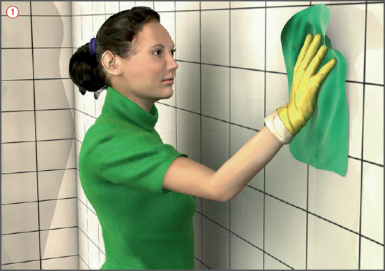
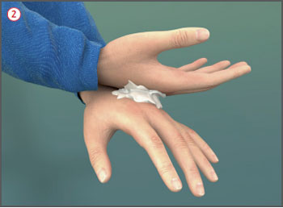

Reinigungs- und Pflegemittel
|
|

Gefährdungen
- Bei Verwendung von Reinigungs- und Pflegemitteln können ätzende, reizende oder sensibilisierende Stoffe auftreten und zu Gesundheitsschäden führen.
Allgemeines
- Reinigungs- und Pflegemittel enthalten u. a. Tenside, Säuren, Laugen oder Lösemittel, die in unterschiedlichen Konzentrationen enthalten sind.
Schutzmaßnahmen
Technische Schutzmaßnahmen
- Beim Umfüllen müssen Originalgebinde oder zugelassene Gebinde verwendet werden und diese wie das Original gekennzeichnet sein.
- Nicht in Behälter umfüllen, durch deren Form oder Bezeichnung der Inhalt mit Lebensmitteln verwechselt werden kann.
- Reinigungsmittel nicht mischen.
- Zum Ansetzen gebrauchsfertiger Lösungen grundsätzlich kaltes Wasser verwenden.
- Dosierangaben des Herstellers beachten.
- Dosierhilfen wie Dosierflaschen, -beutel, -pumpen oder automatische Dosieranlagen verwenden.
- Möglichst technische Hilfsmittel wie Reinigungswagen, Feuchtwischmops und Pressen benutzen, um Hautkontakt mit der Reinigungs- oder Schmutzflotte zu vermeiden.

Organisatorische Maßnahmen
- Im Rahmen der Gefährdungsbeurteilung feststellen, ob die vorgesehenen Reinigungs- oder Pflegemittel gefahrstoffhaltig sind. Auch nicht gekennzeichnete Mittel können Stoffe enthalten, die die Gesundheit schädigen können.
- Informationen über den GISCODE im Gefahrstoffinformations system der BG BAU – WINGIS (www.wingisonline.de) – einholen.
- Prüfen, ob weniger gesundheitsschädliche Produkte eingesetzt werden können.
- Gefahrstoffverzeichnis erstellen.
- Entsprechende Betriebsanweisung erstellen und die Beschäftigten unterweisen.
- Hautschutzplan aufstellen (in Zusammenarbeit mit dem Betriebsarzt).
- Lagerung von Reinigungs- und Pflegemitteln
- in festgelegten Bereichen oder Schränken,
- nicht in Pausen-, Sanitär- oder Bereitschaftsräumen,
- möglichst originalverpackt aufbewahren.
- Auf ausreichende Lüftung achten.
Persönliche Schutzausrüstung
- Schutzhandschuhe tragen. Auswahlhilfen werden im WINGIS (www.wingis-online.de) angeboten.
- Handschuhstulpen umschlagen, um ein Hineinlaufen von Reinigungsmitteln zu verhindern
 .
.
- Dünne Unterziehhandschuhe aus Baumwolle vermindern die Schweißbildung.
- Hautschutz beachten: Vor der Arbeit gezielter Hautschutz, nach der Arbeit richtige Hautreinigung, nach der Reinigung sorgsame Hautpflege
 .
.
- Bei Spritzgefahr, z. B. beim Umgang mit Konzentraten oder beim Um- oder Abfüllen Schutzbrille (Korbbrille) tragen. Gegebenenfalls Augenspülflasche bereitstellen.
Betriebsanweisungen für Tätigkeiten mit Reinigungs- und Pflegemitteln
- Im WINGIS (www.wingisonline.de) stehen Betriebsanwei sungsentwürfe zur Verfügung, in denen die Gefährdungen und Schutzmaßnahmen bei Tätigkeiten mit Reinigungs- und Pflegemitteln beschrieben werden. Die im Rahmen des GISCODES erstellten Betriebsanweisungsentwürfe beziehen sich überwiegend auf Tätigkeiten mit den Konzentraten. Darüber hinaus liegen Sammelbetriebsanweisungen für Tätigkeiten mit verdünnten Anwendungslösungen vor:
- Unterhaltsreinigung/Glasreinigung,
- Grundreinigung,
- Sanitärgrundreinigung,
- Desinfektionsreinigung, aldehydfrei,
- Desinfektionsreinigung mit Aldehyden (ausgenommen Formaldehyd).
Wichtiger zusätzlicher Hinweis für saure Sanitärreiniger
- Saure Reiniger nicht zusammen mit hypochlorithaltigen Reinigern verwenden, weil dabei giftiges und ätzendes Chlorgas entstehen kann.
Zusätzliche Hinweise für Holz- und Steinpflegemittel
- Gesundheitsgefährdungen können durch Lösemitteldämpfe auftreten (u. a. Kopfschmerzen, Übelkeit, Müdigkeit). Lösemittel reizen und entfetten die Haut.
- Geeignete Handschuhfabrikate tragen. Auswahlhilfen werden im WINGIS (www.wingis-online.de) angeboten.
- Bei Überschreitung der Arbeitsplatzgrenzwerte für Lösemittel Atemschutz mit Filter Typ A tragen.
- Auf gute Raumbe- und -entlüftung achten.
- Gebinde geschlossen halten.
- Von Zündquellen (auch elektrische Geräte ohne EX-Schutz) fernhalten.
Arbeitsmedizinische Vorsorge
- Arbeitsmedizinische Vorsorge nach Ergebnis der Gefährdungsbeurteilung veranlassen (Pflichtvorsorge) oder anbieten (Angebotsvorsorge). Hierzu Beratung durch den Betriebsarzt.
07/2021